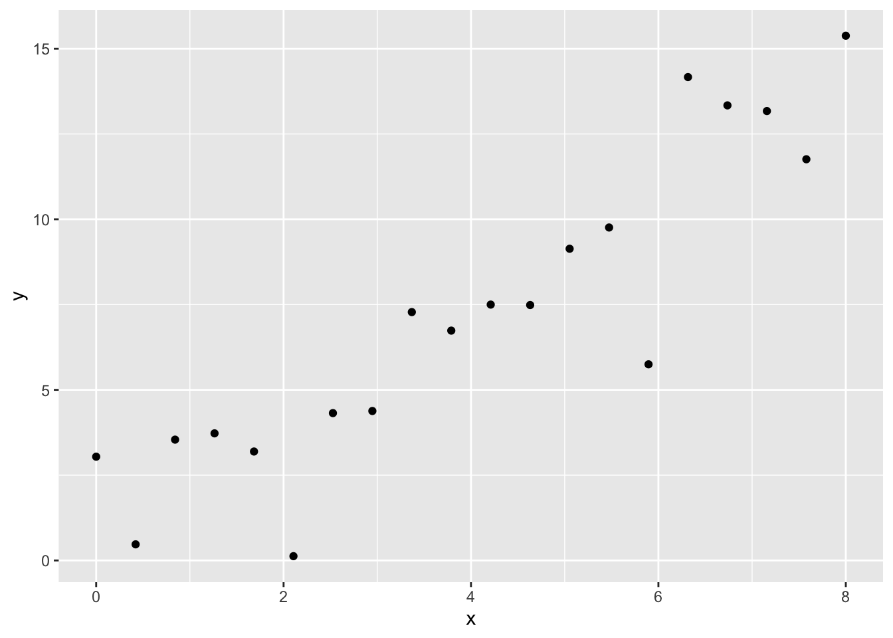
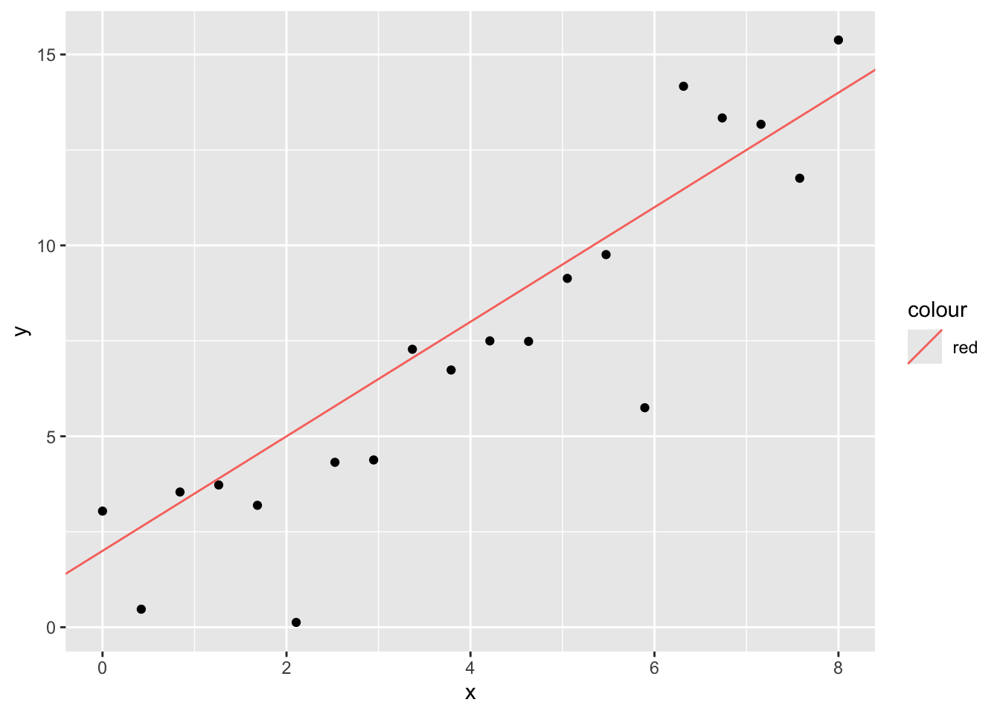
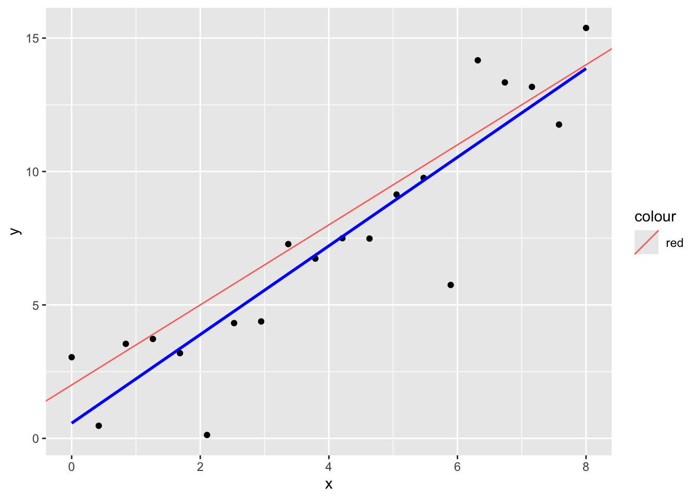
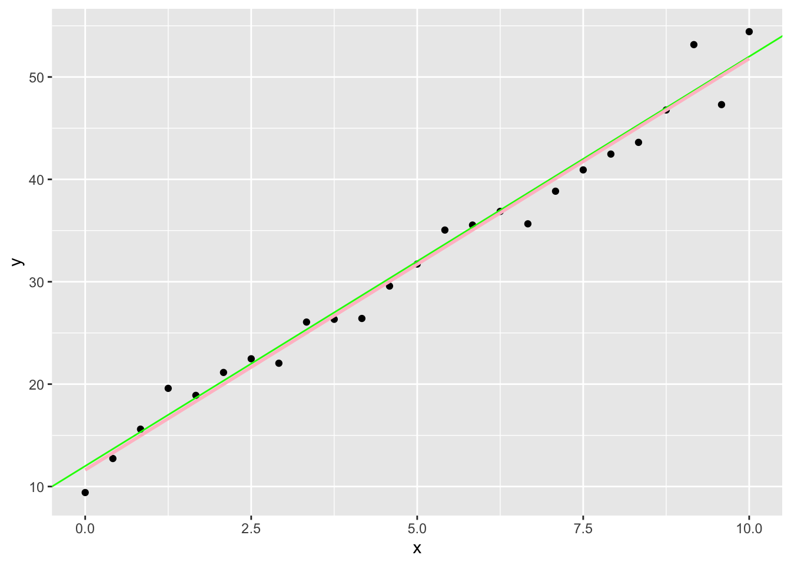

library(tidyverse)AE 05: Anscombe’s Quartet and Linear Regression
In this application exercise, you will investigate the two types of correlation we’ve discussed so far, and learn to plot lines with the form y = mx + b.
Exercise 1: Anscombe’s Quartet
The following code chunk will create a dataframe for each of the four datasets in Anscombe’s Quartet.
aq_1 <- data.frame(x = c(10.0, 8.0, 13.0, 9.0, 11.0, 14.0, 6.0, 4.0, 12.0,
7.0, 5.0),
y = c(8.04, 6.95, 7.58, 8.81, 8.33, 9.96, 7.24, 4.26,
10.84, 4.82, 5.68))
aq_2 <- data.frame(x = c(10.0, 8.0, 13.0, 9.0, 11.0, 14.0, 6.0, 4.0, 12.0,
7.0, 5.0),
y = c(9.14, 8.14, 8.74, 8.77, 9.26, 8.10, 6.13, 3.10, 9.13,
7.26, 4.74))
aq_3 <- data.frame(x = c(10.0, 8.0, 13.0, 9.0, 11.0, 14.0, 6.0, 4.0, 12.0,
7.0, 5.0),
y = c(7.46, 6.77, 12.74, 7.11, 7.81, 8.84, 6.08, 5.39,
8.15, 6.42, 5.73))
aq_4 <- data.frame(x = c(8.0, 8.0, 8.0, 8.0, 8.0, 8.0, 8.0, 19.0, 8.0,
8.0, 8.0),
y = c(6.58, 5.76, 7.71, 8.84, 8.47, 7.04, 5.25, 12.50,
5.56, 7.91, 6.89))- For the dataset
aq_1, calculate the Pearson and Spearman correlations.
## Use cor() with different method options to calculate the two correlations hereWhat do you notice about the two correlations? What does this tell you about the relationship between x and y?
Now, use ggplot() to create a scatterplot of the aq_1 data.
Looking at the scatterplot, do your correlation results make sense?
- Now, you will recreate part (a) using one of the other three datasets.
## Use cor() with different method options to calculate the two correlations hereWhat do you notice about the two correlations? What does this tell you about the relationship between x and y?
Now, use ggplot() to create a scatterplot of the dataset you chose.
Looking at the scatterplot, do your correlation results make sense?
Exercise 2: Plotting lines in R
The following code chunk will generate a set of twenty pairs \((x_i, y_i)\), where the line of best fit is \(y = 2 + 1.5x\). We add a random error term when calculating y so that the two variables are not perfectly correlated.
set.seed(2026)
x <- seq(0, 8, length.out = 20)
y <- 2 + 1.5 * x + rnorm(20, mean = 0, sd = 2)
example <- cbind(x, y)
ggplot(example, aes(x = x, y = y)) +
geom_point()
Because we know that the true model for this dataset has \(\beta_0 = 2\) and \(\beta_1\) = 1.5, we can add the best fit line to the plot above manually using the layer geom_abline(), which draws a line given intercept and slope terms.
ggplot(example, aes(x = x, y = y)) +
geom_point() +
geom_abline(aes(intercept = 2, slope = 1.5, color = "red"))
We can compare the estimated linear fit using geom_smooth(), as shown in the lecture slides:
ggplot(example, aes(x = x, y = y)) +
geom_point() +
geom_abline(aes(intercept = 2, slope = 1.5, color = "red")) +
geom_smooth(method = "lm", color = "blue", se = F)
For this exercise, generate your own dataset with slope and intercept of your choosing, and recreate the final plot with the true line and the estimated line.
## Generate data set -- don't forget to set your seed!
set.seed(105)
x <- seq(0, 10, length.out = 25)
y <- 12 + 4 * x + rnorm(25, mean = 0, sd = 2)
example <- cbind(x, y)
## Create your plot -- have fun with the line colors!
ggplot(example, aes(x = x, y = y)) +
geom_point() +
geom_abline(aes(intercept = 12, slope = 4), color = "green") +
geom_smooth(method = "lm", color = "pink", se = F)
Exercise 3: Linear Regression with Anscombe’s Quartet
Using lm(), as well as tidy() and kable(), run the regression y ~ x for the aq_1 and aq_2 datasets. Round our results to 2 decimal places.
library(tidymodels)
library(kableExtra)
fit_aq1 <- lm(aq_1$y ~ aq_1$x)
tidy(fit_aq1) |>
kable(digits = 2)| term | estimate | std.error | statistic | p.value |
|---|---|---|---|---|
| (Intercept) | 3.0 | 1.12 | 2.67 | 0.03 |
| aq_1$x | 0.5 | 0.12 | 4.24 | 0.00 |
fit_aq2 <- lm(aq_2$y ~ aq_2$x)
tidy(fit_aq2) |>
kable(digits = 2)| term | estimate | std.error | statistic | p.value |
|---|---|---|---|---|
| (Intercept) | 3.0 | 1.13 | 2.67 | 0.03 |
| aq_2$x | 0.5 | 0.12 | 4.24 | 0.00 |
What do you notice about the regression results for these two datasets?